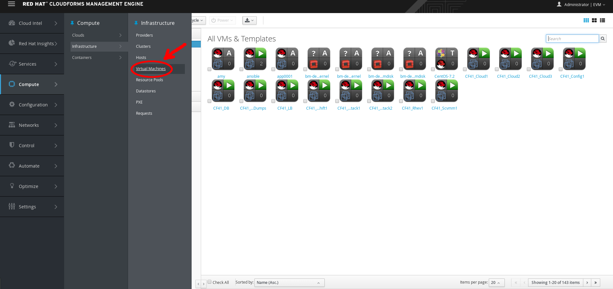

In Red Hat CloudForms, when a virtual machine or cloud instance is provisioned, it goes through multiple phases. First, the request must be made. The request includes ownership information, tags, virtual hardware requirements, the operating system, and any customization of the request. Second, the request must go through an approval phase, either automatic or manual. Finally, the request is executed.
Execution consists of pre-processing and post-processing. Pre-processing acquires IP addresses for the user, creates VMDB instances, and creates the virtual machine based on information in the request. Post-processing activates the VMDB instance.
Provision VM Workflow
Select Compute → Infrastructure → Virtual Machines.

Infrastructure VMs
On the left, in the VMs accordion, select All VMs & Templates.
On the right, click (Lifecycle).
Select (Provision VMs), and observe the following.
Provision VMs
You are provided with a list of templates.
Template List
The Provider column shows some templates are from Red Hat Enterprise Virtualization Manager and others are from VMware.
Select any template and click Continue.
Template Continue
On the resulting page, perform the steps indicated below for each tab and look at the data requested.
Provision Virtual Machines
On the resulting screen, observe that your provision request appears in a list. If you are in an environment with real infrastructure, you can monitor this area for the status of the VM build.
Provision Request